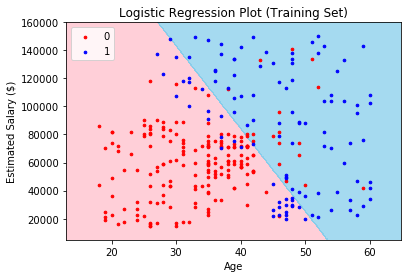
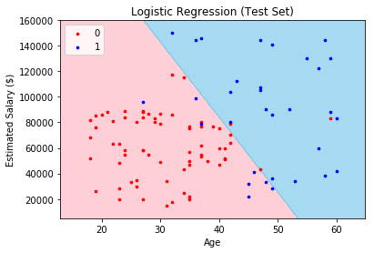

❀ Ｌｉｎｅａｒ Ｃｌａｓｓｉｆｉｅｒ ｗ／ Ｌｏｇｉｓｔｉｃ Ｒｅｇｒｅｓｓｉｏｎ：
Sigmoid Function: hw(x) = 1/(1 + exp(-wTx))
- If hw(x) > 0.5, predict 1
- If hw(x) ≤ 0.5, predict 0
❀ Ｓｃｅｎａｒｉｏ：
You are given a dataset
containing info of 400 website users with each user's age, salary, and whether or not she/he purchased the car.
By analyzing this data, you are asked to predict if a new user with known age and salary will likely to purchase the car or not.
❀ Ｐｙｔｈｏｎ Ｃｌａｓｓｅｓ Ｕｓｅｄ：
✣ (from sklearn.linear_model) LogisticRegression
✣ (from sklearn.preprocessing) StandardScaler
✣ (from sklearn.model_selection) train_test_split
✣ (from matplotlib.colors) ListedColormap
❀ Ｒ Ｐａｃｋａｇｅｓ／Ｃｌａｓｓｅｓ Ｕｓｅｄ：
✣ glm
❀ Ｉｍｐｌｅｍｅｎｔａｔｉｏｎ ｉｎ Ｐｙｔｈｏｎ ＆ Ｒ：
*Try running the Python code & insert the new user's age and salary to see if she/he will purchase the car!*
https://github.com/lukysummer/Logistic-Regression
❀ Ａｃｃｕｒａｃｙ：
✣ Training Accuracy: 0.8233333333333334
✣ Test Accuracy: 0.89
❀ ＲＥＳＵＬＴＳ：

The graph above shows the scatter plot of the raw training points: red dots for Not Purchased (0) & blue dots for
Purchased (1), along with the linear decision boundary generated by fitting Logistic Regression to the training set. The model predicts that
any new user with age & salary combination within the pink area will likely NOT purchase the car, while one within the blue area will likely
purchase the car. Looking at the training accuracy (~0.82), nearly 18% of the original training points are mislocated into the opposite section.
This error might be due to the small size of the dataset (400 points) as well as limiation of logistic regression's linear boundary.

The graph above shows the scatter plot of the raw test points: red dots for Not Purchased (0) & blue dots for
Purchased (1), along with the linear decision boundary generated by fitting Logistic Regression to the training set. Looking at the test accuracy
(0.89), 11% of the original test points are mislocated into the opposite section. Fortunately, there seems to be minimal overfitting since both
training and test accuracies are at a similar level.